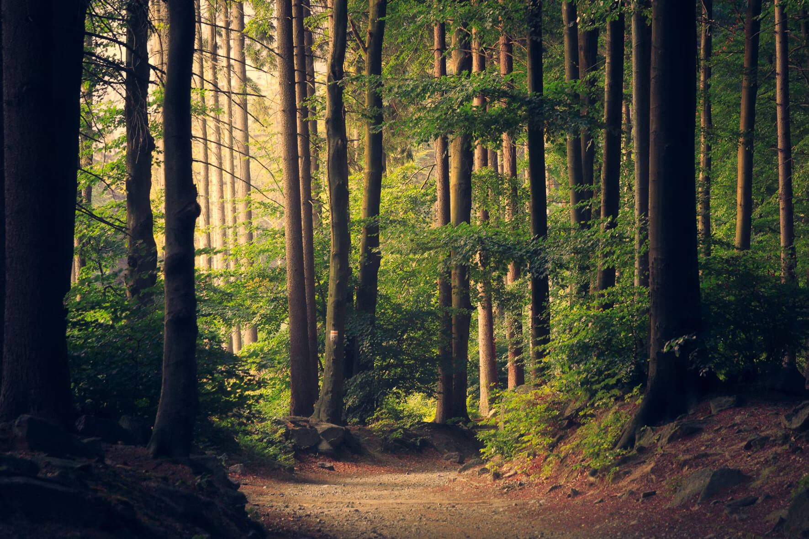

Our Adventure Activities
Land Activities
- archery - Learn precision and focus
- rock Climbing - Indoor and outdoor walls
- axe Throwing - Safe, supervised sessions
- hillwalking - Explore Scottish landscapes
- orienteering - Navigation skills
- abseiling - Descend with confidence
- pole Climbing - Team challenge activity

Water Activities
- Kayaking - Explore local lochs
- Powerboating - Thrilling water adventure
- Raft Building - Teamwork on water
Adventure Feedback
"The climbing wall and archery were the highlights of our trip! The instructors were amazing with our students - patient, encouraging, and safety-focused throughout." - Miss Johnston, Queen's Park Secondary
Find more outdoor activity inspiration at: Mountaineering Scotland